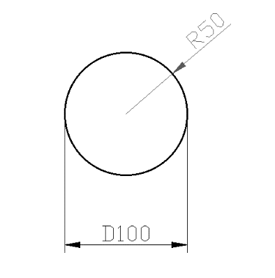
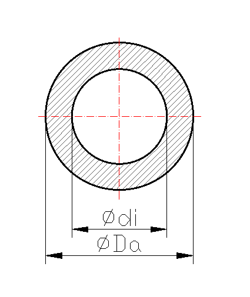
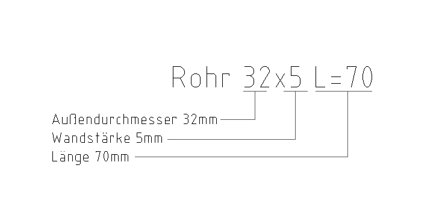
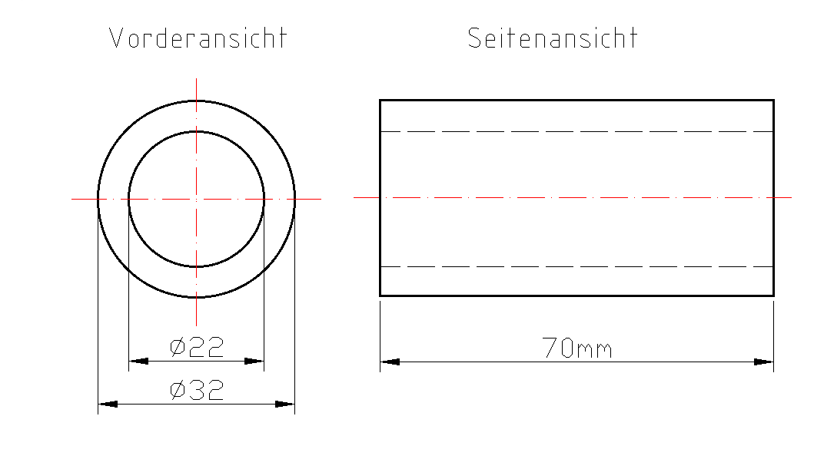

2 Rohrabmessungen
Öffnet YouTube. Braucht Internet.
Zum Zeichnen und Rechnen am Papier. Braucht Internet.
Tippe in die Kästchen. Dann tippe auf „Prüfen“.
Grün = richtig, Rot = schau noch einmal.
Radius und Durchmesser

D = Durchmesser (ganz quer durch den Kreis)
R = Radius (von der Mitte bis zum Rand)
D = 2 · R
Der Durchmesser ist doppelt so groß wie der Radius.
Tipp: 1 cm = 10 mm
Aufgabe 1
Berechne den Durchmesser oder den Radius. Achtung: Manche Antworten sind in cm!
mm → cm ist : 10 (z. B. 28 mm = 2,8 cm). cm → mm ist · 10.
| Durchmesser D | Radius R | |
|---|---|---|
| a | 20 mm | mm |
| b | cm | 3 cm |
| c | 34 mm | mm |
| d | cm | 14 mm |
| e | 46 mm | cm |
Aufgabe 2
Rechne zuerst. Dann zeichne die Kreise am Papier mit dem Zirkel.
| Kreis mit R = 12 mm | D = mm |
| Kreis mit D = 30 mm | R = mm |
✎ Dann am Papier zeichnen
Tipp: Stell den Zirkel immer auf den Radius ein.
Vorderansicht eines Rohres

DA = Außendurchmesser
dI = Innendurchmesser
s = Wandstärke (wie dick die Rohrwand ist)
s = DA − dI2
Warum durch 2?
| s | dI (Loch) | s |
| ◄──── DA ────► | ||
Geh im Bild von links nach rechts quer durch das Rohr:
zuerst eine Wand, dann das Loch, dann wieder eine Wand.
DA − dI = 2 Wände.
Du willst nur 1 Wand. Darum teilst du durch 2.
Beispiel: DA = 50 mm, dI = 40 mm
50 − 40 = 10 mm → das sind 2 Wände
10 : 2 = 5 mm → s = 5 mm
Aufgabe 3
Berechne, was fehlt: Außendurchmesser, Innendurchmesser oder Wandstärke. Achtung auf cm und mm!
Außendurchmesser: DA = dI + s + s. Innendurchmesser: dI = DA − s − s.
| DA | dI | s | |
|---|---|---|---|
| a | 20 mm | 14 mm | mm |
| b | cm | 3 cm | 3 mm |
| c | 34 mm | 3 cm | mm |
| d | cm | 14 mm | 3 mm |
| e | 46 mm | mm | 3 mm |
Angabe von Rohren

Rohr 32 x 5 L = 70 heißt:
- Außendurchmesser 32 mm
- Wandstärke 5 mm
- Länge 70 mm
Zeichnung eines Rohres

Innen: 32 − 5 − 5 = 22 mm. In der Seitenansicht ist die Innenwand unsichtbar: gestrichelt.
Aufgabe 4
Rohr 35 x 5, Länge 65 mm. Rechne zuerst die Maße aus.
| Außendurchmesser DA | mm |
| Wandstärke s | mm |
| Innendurchmesser dI | mm |
✎ Dann am Papier zeichnen
Zeichne das Rohr in Vorderansicht und Seitenansicht.
Aufgabe 5
Ein Rohr hat: Innendurchmesser 26 mm, Wandstärke 3 mm, Länge 65 mm. Wie groß ist der Außendurchmesser?
| Außendurchmesser DA | mm |
✎ Dann am Papier zeichnen
Zeichne das Rohr in Vorderansicht und Seitenansicht.